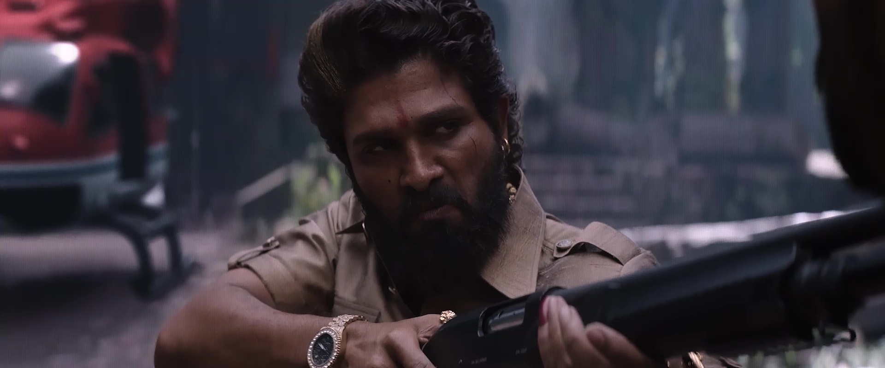
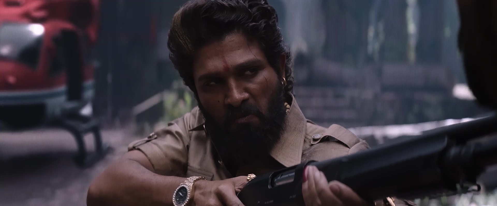

6.9/10
Action | Crime | Thriller
Allu Arjun, Fahadh Faasil, Rashmika Mandanna, Sreeleela
Sukumar
Hindi DD5.1+Telugu / HC-ESub
HD 1080p | 720p | 480p


 

Pushpa 2 The Rule 2024 Hindi Dubbed: The clash is on as Pushpa and Bhanwar Singh continue their rivalry in this epic conclusion to the two-parted action drama.
Pushpa: The Rule, directed by Sukumar and the sequel to the 2021 blockbuster Pushpa: The Rise, delivers a captivating continuation of the story of Pushpa Raj, the fearless and rebellious red sandalwood smuggler, played with remarkable intensity by Allu Arjun. The film continues the journey of Pushpa as he faces new challenges, power struggles, and personal conflicts, with higher stakes and more explosive action sequences. The film’s greatest strength is Allu Arjun’s powerful performance, which elevates the character of Pushpa into an iconic figure in Indian cinema. His portrayal is filled with raw emotion, charm, and a sense of defiance that resonates with audiences. His swag and attitude continue to captivate, and he seamlessly carries the film through its emotional highs and action-packed lows. His dialogues, many of which have become popular catchphrases, continue to energize fans. Rashmika Mandanna returns as Srivalli, offering more depth to her character. While she remains a key emotional anchor for Pushpa, the sequel gives her a bit more screen space to develop her relationship with him. Fahadh Faasil, playing the role of Bhanwar Singh Shekhawat, the antagonist, brings a menacing yet calculated performance, giving Pushpa a formidable rival. The power struggle between Pushpa and Shekhawat drives much of the plot, and their rivalry makes for compelling viewing. Sukumar’s direction is top-notch, as he continues to craft a raw, gritty world filled with tension, high-octane sequences, and a strong sense of realism. The narrative is gripping, filled with unexpected twists and turns that keep the audience engaged. The dialogues are impactful, and the rural backdrop adds authenticity to the story. The cinematography by Mirosław Kuba Broż and the action choreography are spectacular, delivering an immersive experience. The film’s soundtrack, composed by Devi Sri Prasad, is another highlight. The music, especially the background score, intensifies the action sequences and amplifies the film’s emotional beats. The song “Saami Saami” and the intense “Srivalli” track continue to make waves, becoming popular chart-toppers. The iconic Pushpa theme, with its intense beats, is unforgettable and sets the tone for the movie. On the downside, while Pushpa: The Rule is an engaging watch, its pacing sometimes falters, with certain scenes dragging a bit longer than necessary. Some of the subplots are a bit formulaic, and the excessive focus on action sequences may overshadow the depth of the story for some viewers. In conclusion, Pushpa: The Rule is a solid sequel that expands on the universe established in the first film. With Allu Arjun in his element, strong performances from the supporting cast, and Sukumar’s masterful direction, the film is a rollercoaster of emotions, drama, and action. It’s a must-watch for fans of the original film and those who enjoy gripping, larger-than-life tales of rebellion and And then other words movie is always wathach to everyone so thank you so much for this type of cinema making great movie experiences Was this review helpful to you?